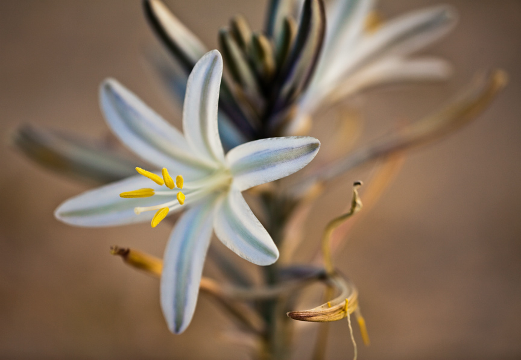
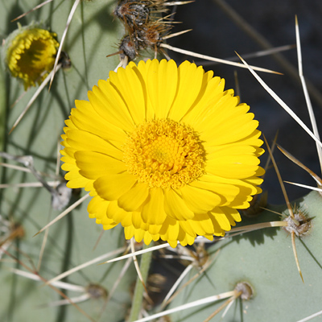
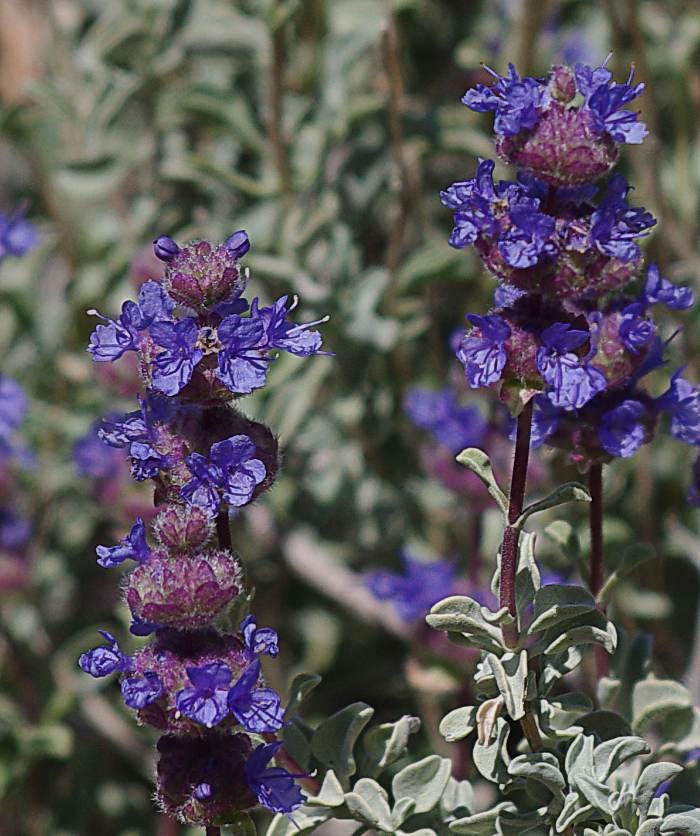
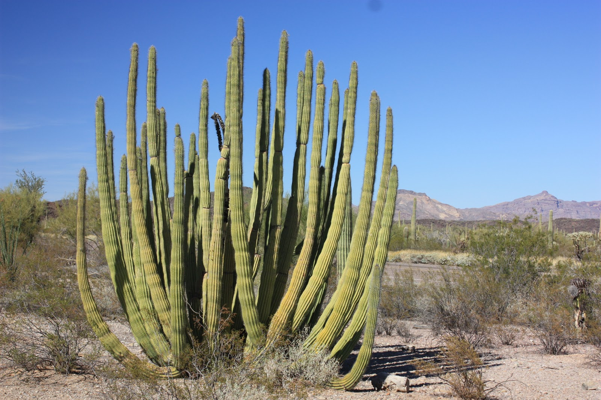
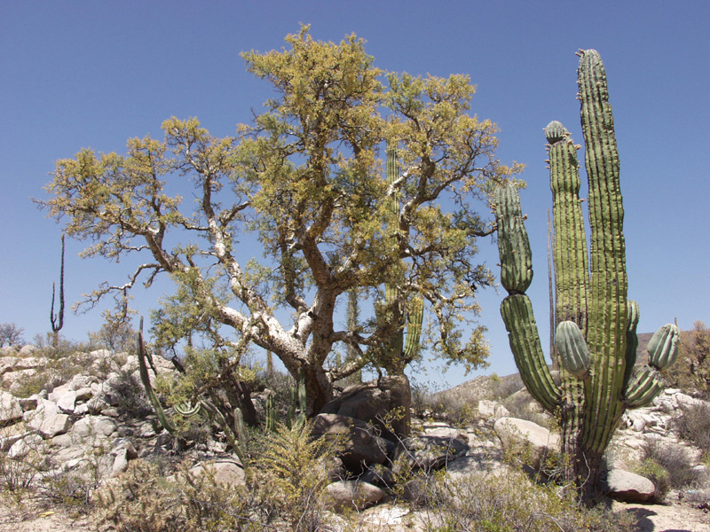
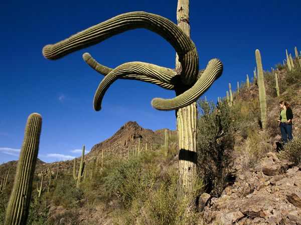

PLANTE - doar cele mai robuste dintre plantele rezistente la seceta pot supravietui tot timpul anului in desert.Printre acestea se numara cactusii si yucca.Semintele unor plante mai sensibile stau intr-o stare de hibernare in sol.Dupa o rafala deploaie,incoltesc si infloresc inainte ca umezeala sa se evapore.Carcelul gurii-leului,tufa -de-sare desertica,cactusi,welwitschia.
În deşert plantele trebuie să supravieţuiască perioade lungi fără apă. De aceea, rădăcinile lor coboară în adâncimea solului, unde găsesc pământ umed. Unele plante, cum este cactusul, au tulpini dense în care înmagazinează apa, în timp ce frunzele sunt cerate, pentru a reduce la minim evaporarea, şi sunt dotate cu spini, pentru a se apăra de animale. Seminţele unora dintre aceste plante se conservă în pământ chiar şi un timp îndelungat, în aşteptarea rarelor ploi. Când acestea sosesc, plantele încolţesc în timp foarte scurt, înfloresc şi mor, răspândind pe pământ alte seminţe.
Cum, când, de ce • La ce folosesc spinii?
Spinii sunt în realitate frunze modificate şi servesc plantei nu doar ca intrument de apărare împotriva animalelor. De fapt, planta care are spini expune căldurii solare doar o suprafaţă limitată, reducând, astfel, la minim evaporarea apei din interior. De asemenea, datorită formei lor spinii adună din aer umiditatea nocturnă care, după ce s-a condensat în vârful lor, picură de-a lungul plantei până la rădăcini. Ce sunt plantele suculente? Se numesc „suculente” plantele capabile să acumuleze apa în interiorul tulpinii şi al frunzelor cărnoase. Cactuşii sunt plante tipice ale deşerturilor din America. Ferocactusul este o plantă de formă rotunjită, iar florile sale sunt galbene, roşii şi portocalii. Tulpina cu palete a nopalului este acoperită cu spini, aşa cum sunt şi fructele sale.Recorduri
Frunzele agavei ajung la 2 m în lungime, iar floarea are înălţimea de până la 10 m. Saguaro sau cactusul uriaş atinge 15 m în înălţime, cu spini lungi de 7 cm. În Arizona, un cactus fară braţe, adică fară forma tipică „de candelabru”, a ajuns la înălţimea record de 24 m, cât o casă cu 7 etaje! Unele exemplare de ferocactus au 3 m înălţime.Rădăcini eficiente
Rădăcinile plantelor din deşert se ramifică uneori considerabil în lăţime, în straturile imediat inferioare ale solului, cu scopul de a folosi chiar şi puţina umiditate care se depozitează prin rouă. Din acest motiv plantele cresc foarte departe una de alta. În deşerturile din Africa de Sud creşte „piatra vie”, denumită astfel pentru că extremităţile tulpinelor sale se camuflează în pietre de pe sol. Frunzele cărnoase ale agavei, cu marginile spinoase care au un ac în vârf, sunt capabile să înmagazineze cantităţi importante de apă. Agava înfloreşte doar o singură dată în viaţă, la vârsta de 10 sau 20 de ani, apoi se ofileşte şi moare.- Barrel Cactus
- Desert Lily
- Desert Marigold
- Desert Sage
- Organ Pipe Cactus
- Elephant Tree
- Joshua Tree
- Jumping Cholla
- Mojave Aster
- Ocotillo
- Palo Verde
- Pancake Prickly Pear Cactus
- Saguaro Cactus
- Soaptree Yucca
- Triangle-leaf Bursage
Exemple de plante
↓ Barrel Cactus(Ferocactusul) ↓

↓ Desert Lily ↓
↓ Desert Marigold(Galbenea) ↓
↓ Desert Sage(Salvie) ↓
↓ Organ Pipe Cactus ↓
↓ Elephant Tree ↓
↓ Saguaro ↓
